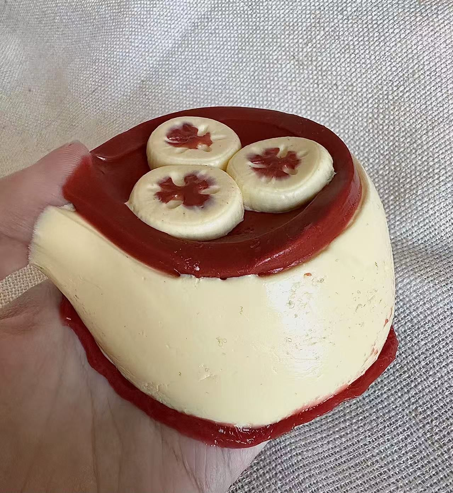
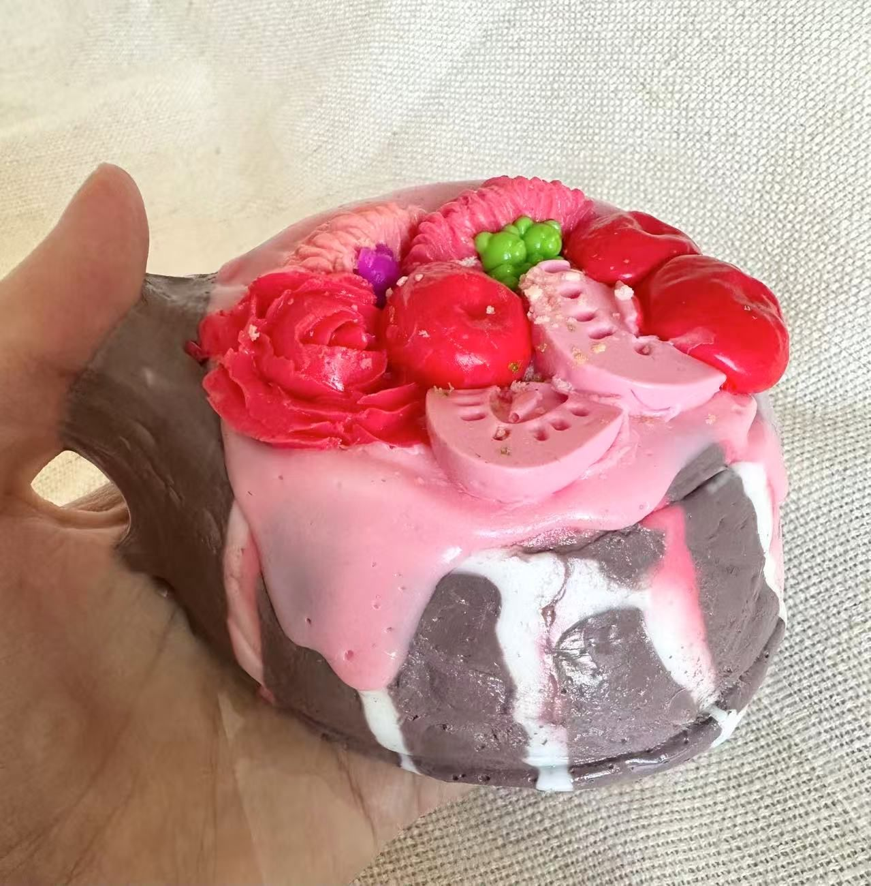
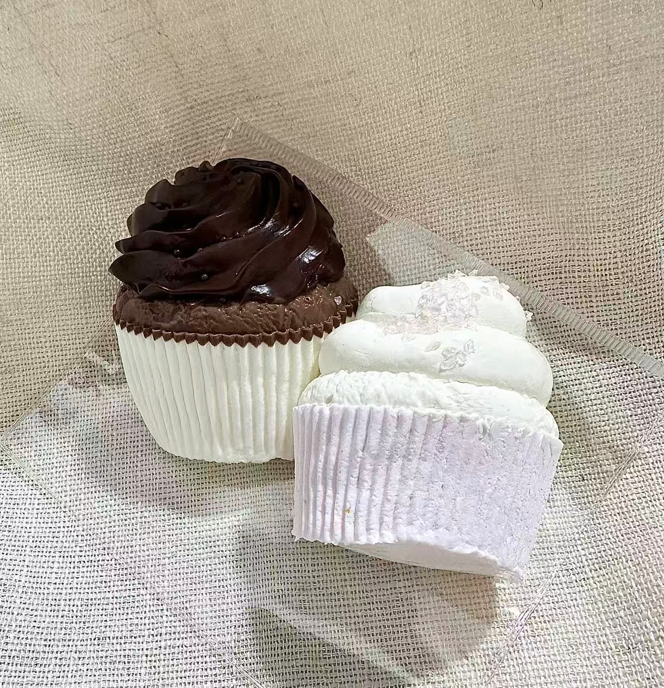
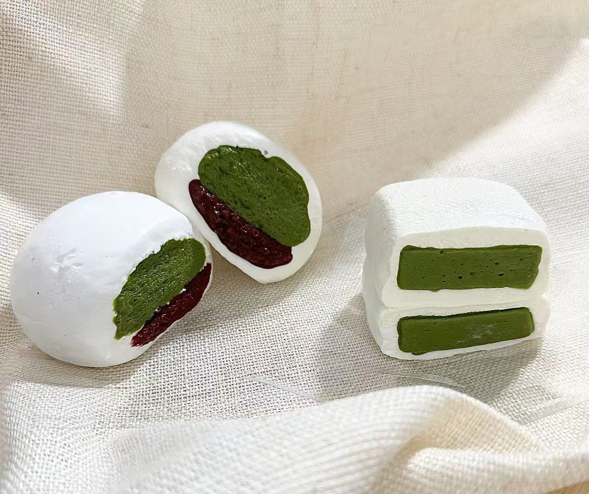
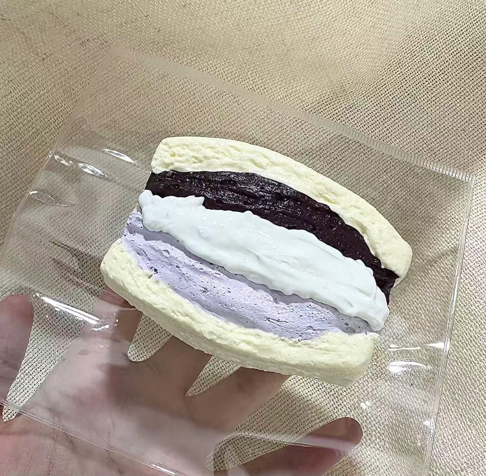
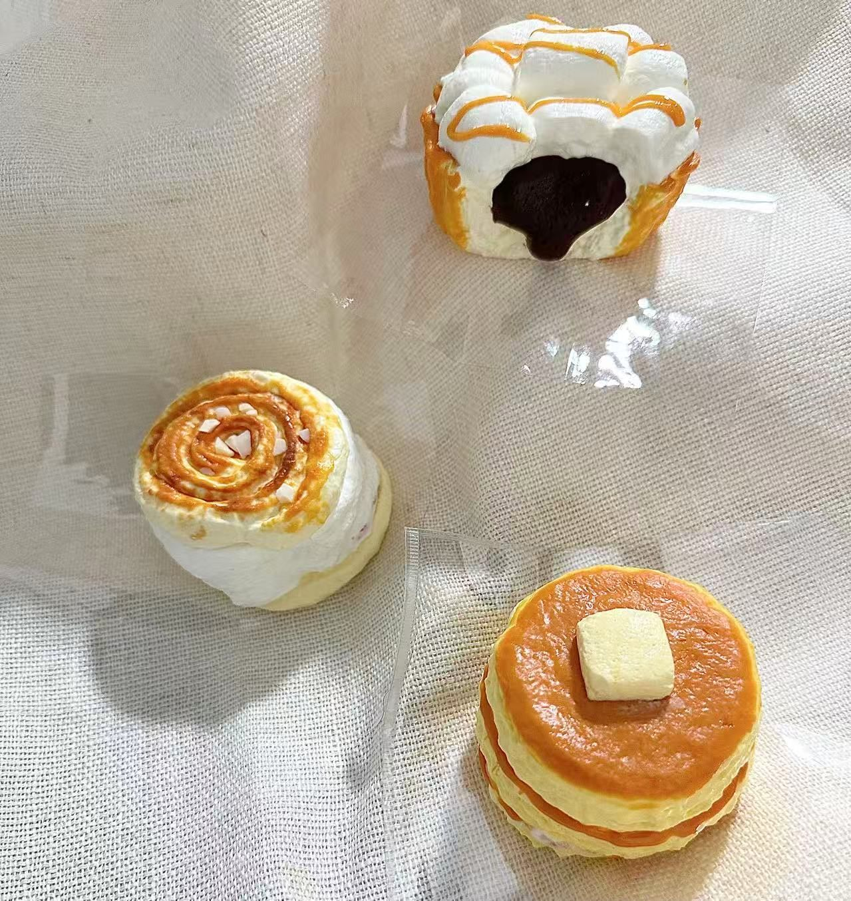
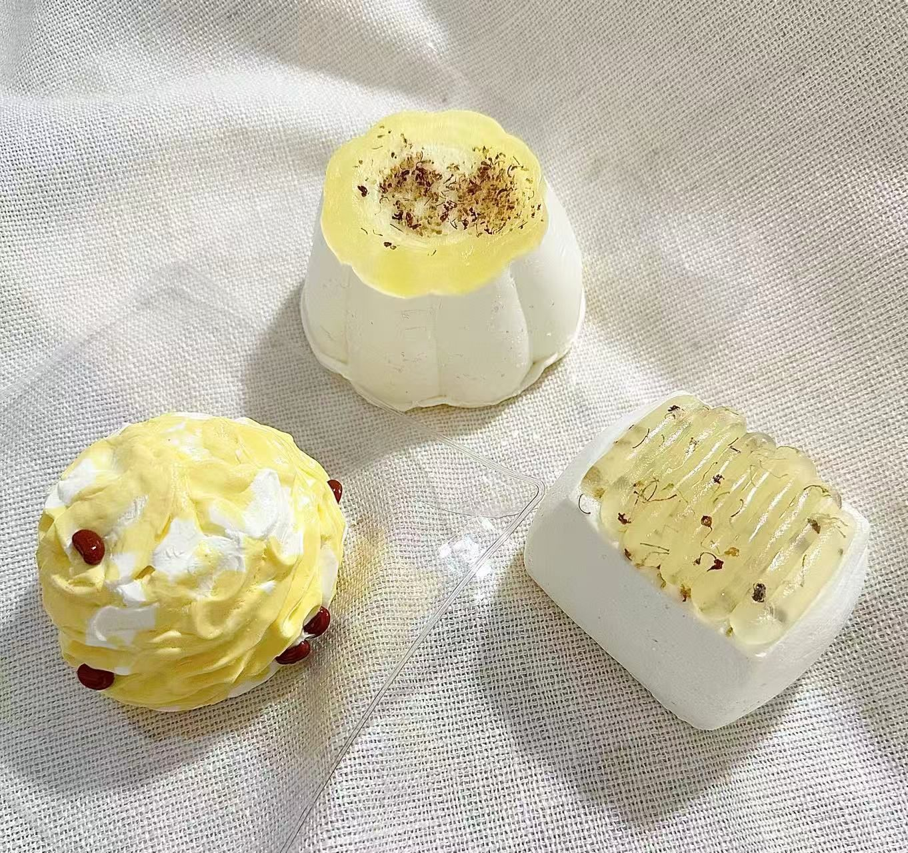
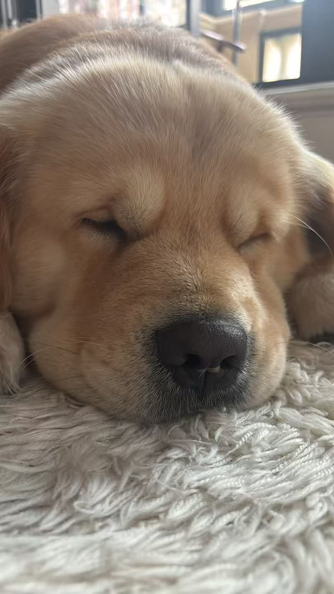
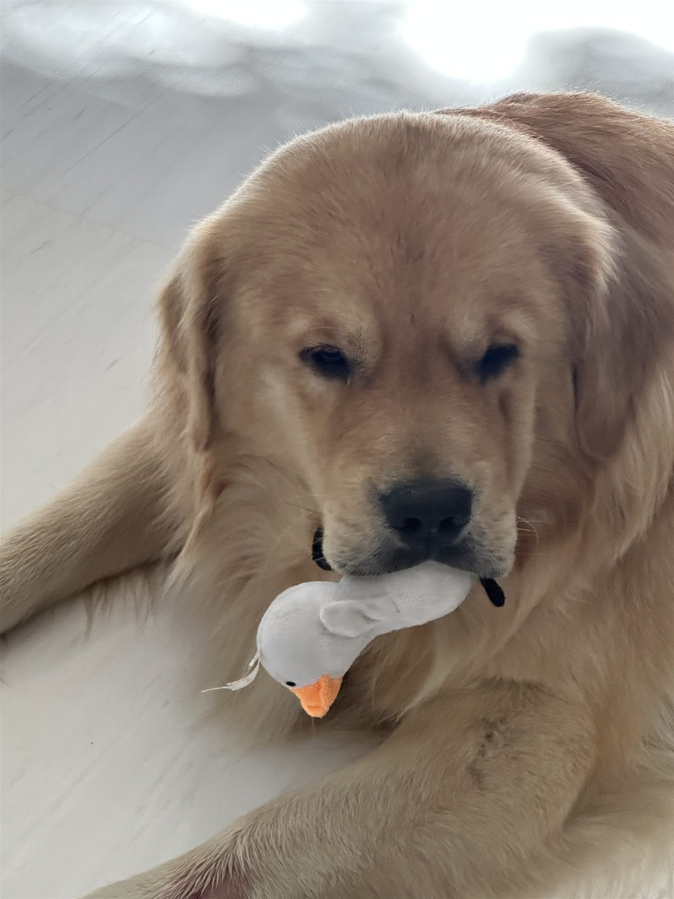

Outside the Lab
Squishies, One Attempt at a Time
I make every one of these silicone squishies by hand — mixing, layering, and sculpting dessert-inspired designs just for the quiet satisfaction of it (and because squeezing something soft and squishy is a surprisingly good way to de-stress). What's below is a handful of pieces picked out of a much longer, ongoing process — there were plenty more in between that never made the cut. Scroll through and you can see the technique slowly improve from one picked moment to the next.


Raspberry Pie & Banana Pudding
Two pieces from early on, back when I wasn't skilled yet and spent way longer on each one than I'd like to admit — they didn't turn out exactly as I'd hoped. There were plenty more like this before things started clicking. But they were soft, fun to squeeze, and good enough to keep me making more.

Chocolate & Cream Cupcakes
A chocolate cupcake and a cream cupcake, soft and squishy, made to squeeze away stress. The frosting swirls took a few tries to get right — but you can already see the difference from chapter one.

Matcha Red Bean Mochi & Matcha Cream Cake
Inspired by matcha desserts I actually eat. I tried to recreate the layers and fillings in silicone — the red bean core, the matcha skin, the cream cake stack. Still soft and squishy, just with a lot more detail than before.

Purple Rice & Taro Sandwich
A single squishy, but a much harder one: dark purple sticky rice, light purple taro paste, and a white cream cheese layer on top — three distinct colors and textures stacked cleanly in one piece.

Churros, Lava Cream Cake & Butter Pancakes
Three squishies, three very different techniques: a spiral-shaped churro, a cake with flowing chocolate filling cut into it, and a stack of pancakes finished with a tiny pat of butter on top.

Red Bean Cream Ice Cream, Osmanthus Tofu & Pudding
My most detailed set so far — soft pastel colors, creamy piped textures, and delicate floral specks pressed into the surface. A long way from where I started, with a lot of pieces in between that aren't pictured here.
See Them Squish
Music
I play guitar, piano, and flute.
Sports
I play tennis, badminton, table tennis, and swim.
Twin Sister, Little Sister & Maomao
I'm a twin — my twin sister and I grew up doing pretty much everything together, and I also have a younger sister. And this is our golden retriever, Maomao (毛毛) — a boy, and his name means "fluffy" in Chinese.

